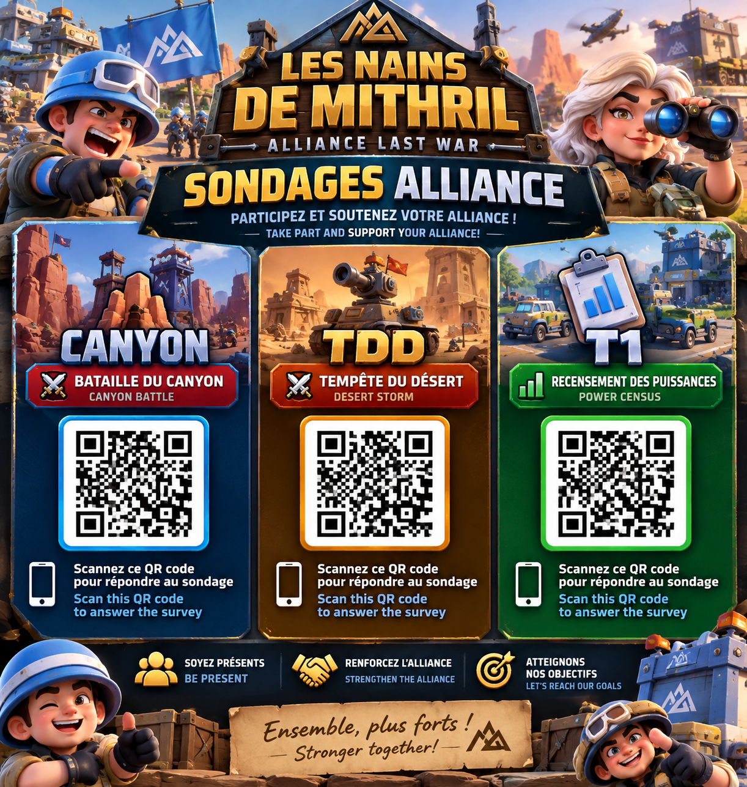

⚔️ LES NAINS DE MITHRIL ⚔️
Téléchargez et partagez l’affiche des 3 sondages de l’alliance !
Download and share the poster for all three alliance surveys!

⬇ Télécharger l'affiche / Download poster 🖼 Ouvrir l'image / Open imageSur iPhone : si le téléchargement ne démarre pas, ouvrez l'image puis maintenez le doigt dessus pour l'enregistrer dans Photos.
On iPhone: if download doesn't start, open the image and press and hold to save it to Photos.